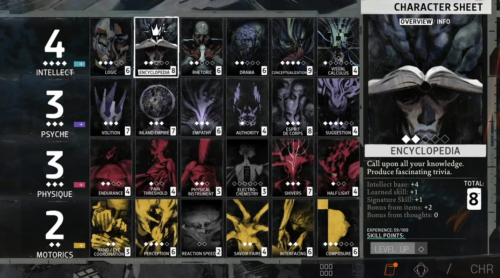
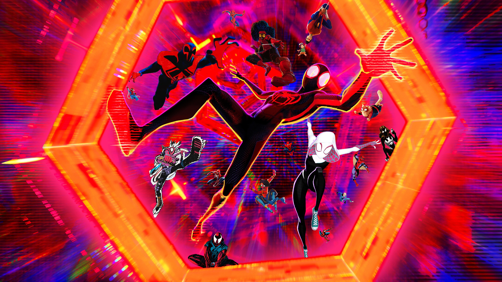

- Persona 3 Reload
-
A sleek and aesthetically pleasing UI that echoes themes of water, melancholy, and tranquility
- Hades
-

An energetic and lively UI that echoes themes of fire, challenge, and perseverance
- Disco Elysium
-

A mysterious and engimatic UI that echoes themes of grit, fervor, and the supernatural
- Hollow Knight
-
An elegant and simple UI that echoes themes of curiosity, respite, and hope
- Bioshock
-
A rustic and detailed UI that echoes themes of survival, nostalgia, and adventure
- Spiderverse Series
-

A superhero movie that defies conventions with its animation style and storytelling
- Spirited Away
-

An emotional movie that visually induces memories of a non-existent past
- Fantastic Mr. Fox
-
A comedy movie that mixes elements of whimsy with Wes Anderson's unique tastes
- Perfect Blue
-
A horror movie that pushes the medium of the genre through animation
- Loving Vincent
-
A revolutionary movie where all the animation were done through oil on canvas